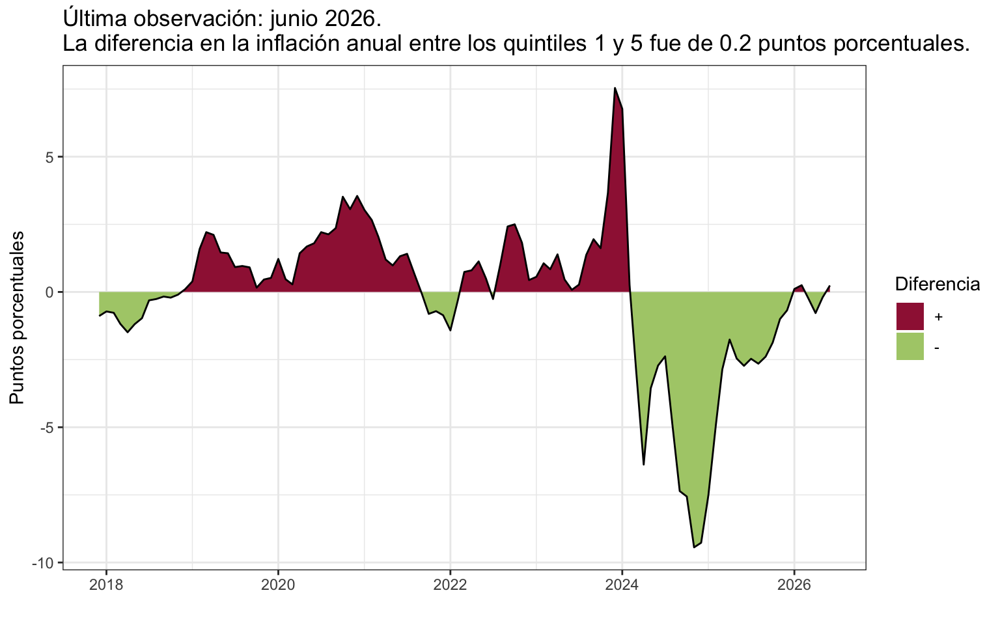

Este informe reporta las brechas de inflación entre los hogares de menores y mayores ingresos junto con la brecha en la inflación por regiones geográficas.
Es claro que controlar la inflación beneficia a todos los consumidores aunque, generalmente, existen diferencias entre la inflación que enfrentan los hogares de menores ingresos, que gastan la mayor parte de los mismos en alimentos y bebidas, y la que enfrentan los hogares de mayores ingresos que pueden diversificar su consumo. Esta heterogeneidad en las canastas de consumo es importante para la política económica, en particular la política monetaria. Los hogares de mayores ingresos, que tienen menores propensiones marginales a consumir, gastan más en sectores con mayores rigideces de precios. Debido a este hecho, la eficacia de la política monetaria se reduce en equilibrio general.
Por otro lado, la brecha de inflación por regiones geográficas, si es sistemática, afecta la valorización de la canasta básica con la que se mide la pobreza y la indigencia. En ese sentido, incluso una pequeña diferencia en la inflación regional puede tener efectos marginales en el bienestar bastante grandes porque pueden empujar un hogar por encima o por debajo de los umbrales de pobreza. Es importante, entonces, cuantificar las disparidades inflacionarias por regiones porque puede ayudar en la implementación de políticas de asistencia social focalizada.
Inflación para hogares de mayores y menores ingresos
La Figura 1 muestra la diferencia entre la inflación anual experimentada por el 20 por ciento de la población de menores ingresos y el 20 por ciento de mayores ingresos (medido por el ingreso familiar per capita del hogar). Durante el mes de junio, el comportamiento de las tasas de inflación interanuales experimentadas por los hogares de mayores y menores ingresos continua el comportamiento observado en el mes anterior. Durante junio, la brecha se ubicó en 0.24 puntos porcentuales en favor de los hogares de mayores ingresos. Este comportamiento se explica principalmente por las tasas de inflación interanuales elevadas de divisiones como Alimentos y bebidas no alcohólicas, en la que los hogares de menores ingresos destinan una proporción mayor de su gasto. Estas divisiones contribuyen a incrementar la brecha en detrimento de los hogares de menores ingresos. Sin embargo, las tasas de inflación interanuales aún elevadas de Transporte, Restaurantes y hoteles y Salud, divisiones en las que los hogares de mayores ingresos destinan una proporción mayor de su gasto, contribuyen a que el diferencial de inflación experimentado entre ambos quintiles disminuya.
Figura 1. Diferencia entre la tasa de inflación interanual entre el 20% con menores ingresos y el 20% con mayores ingresos

La Figura 2 muestra las diferencias entre las contribuciones a la tasa de inflación interanual de junio del 20 por ciento de los hogares de menores y mayores ingresos. La división de Alimentos y bebidas no alcohólicas explicó casi completamente la parte que aumenta la brecha en la inflación para los hogares de menores ingresos en comparación con los hogares de mayores ingresos. En particular, esta división explicó 6.65 puntos porcentuales de la diferencia. En la otra dirección, las divisiones que más contribuyeron a aumentar la brecha en detrimento de los hogares de mayores ingresos fueron Transporte, Restaurantes y hoteles y Salud. Estas tres divisiones contribuyeron a reducir la brecha en la inflación enfrentada por los hogares de menores y mayores ingresos en 4.96 puntos porcentuales.
Figura 2. Diferencia de la incidencia de cada división entre el 20% con menores ingreso y el 20% con mayores ingresos
El Cuadro 1 muestra el impacto diferencial de la inflación por quintiles de ingreso per cápita familiar. Los hogares de menores ingresos, quintil 1, enfrentaron en junio una inflación de 1.77 por ciento comparada con una inflación de 1.96 por ciento para los hogares del 20 por ciento de mayores ingresos (ver Figura 3). En este mes en particular, la diferencia entre la tasa de inflación mensual que enfrentaron los hogares de menores ingresos y la de los hogares de mayores ingresos fue de 0.19 puntos porcentuales en detrimento de los hogares de mayores ingresos. La mayor incidencia a la diferencia en la inflación experimentada por los quintiles 1 y 5 es explicada por Salud, división en la que los hogares de mayores ingresos concentran una proporción mayor de su gasto. Por otra parte, el índice de precios de Alimentos y bebidas no alcohólicas fue mayor para los hogares de menores ingresos que para los hogares de mayores ingresos.
Cuadro 1. Inflación por quintil de ingresos
| 20 % con menores ingresos | 1 | 1.77 | 33.75 |
| 2 | 1.79 | 33.67 | |
| 3 | 1.85 | 33.56 | |
| 4 | 1.88 | 33.61 | |
| 20% con mayores ingresos | 5 | 1.96 | 33.52 |
Figura 3. Tasa de inflación mensual para cada quintil de ingresos
La brecha de inflación entre hogares de menores y mayores ingresos se puede construir utilizando los deciles de ingreso en lugar de los quintiles. El Cuadro 2 muestra el impacto diferencial de la inflación, mensual e interanual, por deciles de ingreso per cápita familiar. Los hogares de muy bajos ingresos, decil 1, enfrentaron en junio una inflación mensual de 1.77 por ciento comparada con una inflación mensual de 1.98 por ciento para los hogares del 10 por ciento de mayores ingresos. En términos de la inflación interanual, en junio los hogares de muy bajos ingresos enfrentaron una inflación 0.56 puntos porcentuales más alta que los hogares de muy altos ingresos.
Cuadro 2. Inflación por deciles de ingreso
| 10% con menores ingresos | 1 | 1.77 | 33.92 |
| 2 | 1.78 | 33.59 | |
| 3 | 1.76 | 33.71 | |
| 4 | 1.82 | 33.63 | |
| 5 | 1.85 | 33.60 | |
| 6 | 1.85 | 33.52 | |
| 7 | 1.86 | 33.69 | |
| 8 | 1.90 | 33.53 | |
| 9 | 1.95 | 33.67 | |
| 10% con mayores ingresos | 10 | 1.98 | 33.36 |
| Diferencia entre decil 1 y decil 10 | -0.22 | 0.56 |
Brecha de Inflación por Regiónes Geográficas
La Figura 5 muestra la tendencia de la brecha de inflación por deciles de ingreso comparada con la magnitud de la brecha de inflación por regiones geográficas.
La brecha de inflación geográfica se calculó como la diferencia entre la tasa de inflación interanual de la región del país con mayor inflación y la tasa de inflación de la región del país con menor inflación. La figura refleja la importancia relativa de la brecha de inflación por regiones del país. Por ahora no es importante identificar que regiones tuvieron la mayor y menor inflación sino mostrar el alcance de las diferencias entre las brechas de inflación por deciles de ingreso y por regiones geográficas. En promedio, la brecha de inflación por regiones geográficas fue de 1.23 puntos porcentuales, más de 2.9 veces más grande que la brecha por deciles de ingreso de 0.42. De hecho esta diferencia se hace mucho más grande al final del período y no hay ningún momento desde 2017 en el que la brecha por deciles de ingreso sea mayor a la brecha de inflación por regiones geográficas. Sin embargo, durante los últimos meses, la brecha de inflación por regiones se acercó a su promedio histórico 2018-2022, alcanzando 0.77 puntos porcentuales, contra 0.24 de la brecha de inflación por ingresos.
Figura 5. Desigualdad geográfica y desigualdad de ingresos
En general, no hay nada especial o estructural en las canastas de consumo de los hogares de menores ingresos pero si hay fuertes razones para pensar que los factores estructurales (costos de transporte, regulaciones provinciales, etc.) desempeñan un papel clave a la hora de distinguir la inflación por regiones. Con esto en mente, el mapa muestra los valores de inflación acumulada en cada región del país desde diciembre de 2016. Colores más claros indican mayor inflación acumulada y colores más oscuros muestran menor inflación acumulada. Hasta junio de 2026, la región que más inflación acumuló fue la Noroeste con 12373.4 por ciento, mientras que la región que menos inflación acumuló fue la región Patagonia con 11591.7 por ciento. La brecha de inflación entre estas dos regiones alcanza los 781.7 puntos porcentuales. En el mismo período de tiempo la inflación acumulada medida por el IPC nivel general fue de 11845.2 por ciento.
Figura 6. Nivel de precios acumulado desde diciembre de 2016 en cada región
Después de la pandemia de COVID-19 la dinámica de la inflación por regiones geográficas varía. El siguiente mapa muestra los valores de inflación acumulada en cada región del país desde febrero de 2021. Hasta junio de 2026, las regiones que más inflación acumularon fueron las regiones GBA y Patagonia, mientras que la región que menos inflación acumuló fue la región Cuyo. En GBA el nivel general de precios acumulado fue de 2920.8 por ciento mientras que en la región Cuyo fue de 2751.8 por ciento (Figura 7).
Figura 7. Nivel de precios acumulado desde febrero de 2021 en cada región
Tomando en cuenta la evolución de la inflación desde 2017, la brecha de inflación geográfica se definió como el cociente entre los índices de precios para las regiones Cuyo (menor inflación acumulada) y Patagonia (mayor inflación acumulada). La Figura 8 muestra la brecha de inflación geografica calculada de esta manera comparada con la brecha de inflación por deciles de ingreso calculada como el cociente del índice de precios para el decil más bajo (decil 1) contra el índice de precios del decil más alto (decil 10). El panel de la izquierda muestra la comparación utilizando el nivel general y el de la derecha usa la inflación núcleo. Como se observa en el panel de la izquierda, la magnitud de la brecha geográfica es siempre mayor a la brecha de inflación acumulada por deciles de ingreso. En el mes de junio, continuando con la misma tendencia, la brecha de inflación geográfica supera a la brecha de inflación por deciles de ingreso. El panel de la derecha muestra que durante junio la brecha geográfica disminuye levemente mientras que la brecha por deciles de ingreso aumenta. Se observa una mayor volatilidad en la brecha por regiones geográficas comparada con la volatilidad calculada con el nivel general de la inflación. A diferencia del nivel general de infación, la brecha por deciles de ingreso es más baja que la regional. En junio la brecha de inflación por regiones geográficas, medida por la inflación núcleo, es alrededor de 4.58 puntos porcentuales más grande que la brecha por deciles de ingreso.
Figura 8. Brechas de inflación acumuladas por tipo de índice
Desigualdad intra-región
La Figura 9 muestra la brecha de inflación interanual por deciles de ingreso desde 2016 en el panel de la izquierda y desde 2021 en el panel de la derecha para las diferentes regiones del país. Esto es el promedio de la diferencia entre la inflación interanual que enfrentaron los hogares del decil 1 (muy bajos ingresos) y la inflación interanual que enfrentaron los hogares del decil 10 (muy altos ingresos). Un valor positivo indica que la inflación interanual que enfrentaron los hogares de muy bajos ingresos fue mayor a la que enfrentaron los hogares de muy altos ingresos. El comportamiento es dispar entre las regiones: las regiones Noroeste, Noreste y Cuyo muestran brechas negativas tanto desde el 2016 como desde el 2021, en cambio, las regiones Pampeana y Patagonia muestran brechas positivas en ambos paneles. Por último, para la región GBA la brecha es positiva desde el 2016 pero negativa desde el 2021. El panel de la izquierda muestra que la brecha de inflación por deciles de ingreso fue más alta en la región Patagonia alcanzando alrededor de 0.208 puntos porcentuales y fue negativa en la región Cuyo con una brecha de -0.213 puntos porcentuales. Si tomamos la brecha desde 2021, panel derecho de la figura, en un extremo se encuentra la región Patagonia con una brecha por deciles de 0.521 puntos porcentuales y en el otro la región Noroeste, donde la brecha fue -0.635 puntos porcentuales indicando que en esa región los hogares de muy bajos ingresos enfrentaron una inflación más baja que la que enfrentaron los hogares de muy altos ingresos.
Figura 9. Brecha promedio de inflación interanual por región
Desde diciembre de 2016
Desde febrero de 2021
La Figura 10 muestra que la brecha de inflación acumulada entre el decil 1 y el decil 10. Si consideramos esta brecha desde 2016, panel de la izquierda, se puede ver que en cuatro regiones del país los hogares de muy bajos ingresos enfrentaron una inflación acumulada menor que los hogares de muy altos ingresos: Noroeste, Patagonia, Cuyo y Pampeana. En las regiones GBA y Noreste los hogares de muy bajos ingresos experimentaron una inflación acumulada mayor que los hogares de muy altos ingresos. Si se considera la brecha desde el 2021 la situación es diferente. En el panel de la derecha los hogares de muy bajos ingresos experimentaron una inflación acumulada menor que los hogares de muy altos ingresos en todas las regiones menos en la Patagonia, donde la brecha entre los hogares del decil 1 y decil 10 es de aproximadamente 21.9 puntos porcentuales.
Figura 10. Brecha acumulada de inflación acumulada por región
Desde diciembre de 2016
Desde febrero de 2021
La Figura 11 muestra el impacto diferencial de la inflación interanual por deciles de ingreso per cápita familiar para las diferentes regiones del país en junio de 2026. Como se observa la brecha de inflación por deciles de ingreso es negativa en casi todas las regiones indicando que los hogares de muy bajos ingresos enfrentaron una inflación que va desde 0.170 puntos porcentuales más baja que los hogares de muy altos ingresos en la región GBA, hasta 1.059 puntos porcentuales más alta en la región Patagonia. En la región Noreste, en cambio, la brecha es positiva y se situó en 2.181 puntos porcentuales. En el total del país, estos hogares de bajos ingresos enfrentaron una inflación 0.56 puntos porcentuales más alta que los hogares de muy altos ingresos, como se reporta en el Cuadro 2.
Figura 11. Brecha de inflación por región en el último mes
Nota técnica
¿Cómo se calcula la inflación por grupos de ingreso?
La inflación no afecta homogéneamente a todos los hogares del país. Intuitivamente, es lógico pensar que la canasta de consumo de un hogar de ingresos bajos sea diferente a la canasta de consumo de un hogar de ingresos altos, por lo que, si los precios de algunos bienes más consumidos por los hogares de bajos ingresos suben más que los precios de los bienes más consumidos por los hogares de ingresos altos, es esperable que la inflación afecte más a aquellos hogares de bajos ingresos.
¿Cómo se puede trasladar esta idea al cómputo de un índice de precios? En primer lugar, hay que definir qué significa que un hogar sea de ingresos bajos o de ingresos altos. Para ello, se utiliza la distribución del ingreso per cápita del hogar junto con el concepto estadístico de cuantiles. Un cuantil es un valor que divide una distribución de datos en partes iguales, de forma que cada parte contiene un porcentaje dado de los datos. En este análisis, se utilizan los conceptos de quintiles y deciles. Los quintiles dividen los datos en cinco partes iguales y los deciles en diez partes. En particular, se considera hogares de ingresos bajos a aquellos hogares cuyo ingreso per cápita se encuentra en el primero de estos grupos. De la misma manera, se considera que un hogar es de ingresos altos si su ingreso per cápita está en el último de estos grupos. Si se considera al 20 por ciento con ingresos más bajos y más altos para definir los grupos, se está utilizando el concepto de quintiles del ingreso. Los quintiles del ingreso son cinco grupos de la distribución del ingreso per cápita del hogar, cada uno con un quinto de la población ordenada en función de su ingreso. Es decir, cada quintil posee al 20 por ciento de los hogares; por ejemplo, el quintil 1 posee al 20% de los hogares que menores ingresos tienen, mientras que el quintil 5 posee al 20 por ciento de los hogares que mayores ingresos tienen. También se puede hacer una definción análoga usando los deciles de ingreso. De forma análoga, los deciles de ingreso son diez grupos de la distribución del ingreso per cápita del hogar, cada uno con un décimo de la población ordenada en función de su ingreso. En este caso, cada decil posee al 10% de los hogares: el decil 1 posee al 10 por ciento con ingresos más bajos, mientras que el decil 10 contiene al 10 por ciento de los hogares que mayores ingresos tienen. Luego, se deben computar las “canastas de consumo” que en promedio poseen los hogares de cada quintil. Esto es necesario para obtener la ponderación que se le otorgará a cada precio para cada decil.
Para todos estos cálculos se utilizaron los datos de la Encuesta Nacional de Gasto de los Hogares en su edición realizada entre octubre de 2017 hasta diciembre de 2018. Utilizando la base de datos de hogares, se calcularon los quintiles y deciles del ingreso per cápita del hogar. Teniendo identificado el quintil y decil al que pertenece cada hogar, se calculó, por quintil/decil y región del país, la suma de todos los gastos y la suma de los gastos por cada una de las divisiones de los bienes y servicios que componen la canasta del IPC. Luego se dividió el gasto total en cada división de la canasta por el gasto total. Como los ponderadores del IPC publicado por INDEC no están calculados con la ENGHO 17/18, los ponderadores no coinciden con los utilizados por INDEC. Por este motivo, se reescalaron los ponderadores obtenidos con la ENGHO 17/18 para que permitan replicar los valores del IPC de INDEC. Con estos ponderadores, se calcula el índice de precios para cada quintil y la tasa de inflación mensual e interanual para cada grupo. Con respecto a la inflación núbleo, los datos disponibles son los de inflación núcleo por región, por lo que para computar la inflación núcleo para cada decil, se ponderan estos índices considerando el peso de cada región en cada decil de ingreso.
¿Cómo se computan las brechas de inflación?
Siendo que distintos grupos de ingresos y distintas regiones experimentan diferentes tasas de inflación, es pertinente definir medidas que permitan cuantificar la evolución de la desigualdad en la inflación. A estos fines, se computan las métricas definidas por Hartley & Mejia (2024). Sea \(\pi^i_t\) la tasa de inflación neta para el grupo \(i\) en el período \(t\). Siguiendo a los autores, la definición preferida de brecha de inflación entre los grupos \(i\) y \(j\) es la diferencia entre las tasas de inflación de los dos grupos:
\[ B^{i,j}_t = \pi^i_t - \pi^j_t. \] De igual modo, se puede definir la brecha de inflación como un ratio entre las tasas brutas de inflación entre los dos grupos:
\[ \tilde{B}^{i,j}_t = \frac{1+\pi^i_t}{1+\pi^j_t}. \] Las definiciones puede aplicarse tanto a tasas de inflación mensuales como a tasas de inflación interanuales. Las brechas de inflación pueden computarse utilizando tanto la inflación resultante de la variación del IPC Nivel General como la tasa de inflación núcleo. A fines de estructurar el análisis, el foco está en dos brechas: la brecha de inflación por ingresos y la brecha de inflación por regiones geográficas. La brecha de inflación por ingresos posee una comparación natural que es comparar la inflación experimentada por el grupo de menores ingresos con el grupo de mayores ingresos, por lo que las brechas de inflación por ingresos se definen, en el caso de quintiles, como \[ B^{Q1,Q5}_t = \pi^{Q1}_t - \pi^{Q5}_t, \] y en el caso de deciles, como \[ B^{D1,D10}_t = \pi^{D1}_t - \pi^{D10}_t, \] y de forma análoga para \(\tilde{B}^{i,j}_t\). De este modo, valores positivos de la brecha indican que la inflación es más alta para los hogares de menores ingresos y valores negativos indican que la inflación es más alta para los hogares de mayores ingresos.
La brecha de inflación por regiones geográficas refiere a las diferentes tasas de inflación experimentadas en diferentes regiones. A diferencia de la división por ingresos, las regiones no poseen un orden natural. Para no establecer una región como base de la comparación, se proponen dos formas de analizar los datos. Por un lado, se presentan directamente los datos de inflación o de variación acumulada de precios. Esto permite ver directamente qué regiones experimentaron más o menos inflación. Por otro lado, a partir de esta comparación se puede definir la región que en un período temporal experimentó más inflación, y la región que en el mismo período temporal experimentó menos inflación. Denótense estas regiones respectivamente como \(R_{max}\) y \(R_{min}\). Así, la brecha de inflación por regiones geográficas se escribe como
\[ B^{R_{max},R_{min}}_t = \pi^{R_{max}}_t - \pi^{R_{min}}_t. \]
y de forma análoga para \(\tilde{B}^{i,j}_t\). Finalmente, también se define la brecha de inflación intra-región. Esta definición corresponde a la misma definición original de brecha de inflación por ingresos, pero computada condicional a una región, para, finalmente, comparar en qué región se experimenta más desigualdad en la inflación. Esta definición se computa tanto con la inflación interanual como con la inflación acumulada.
Referencias:
- Hartley, Jonathan and Mejia, Jackson (2024). Inflation Inequality Across Time and Space in the United States. Disponible en SSRN: https://ssrn.com/abstract=4818750 or http://dx.doi.org/10.2139/ssrn.4818750